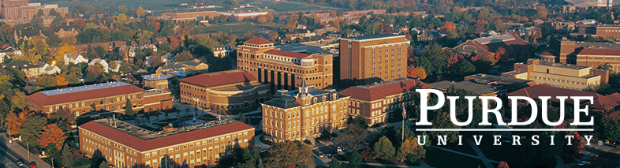

Academic Profile

- Graduated from Purdue University with a Bachelor's degree in Computer Engineering
- Dean’s List and Semester Honors during Fall 2015
- Undergraduate Teaching Assistant for ECE 207 (Electronic Measurement Techniques) for two semesters
- Assisted students in performing experiments using various electronic equipment and in understanding
course material
- Summer Internship at TCIL (Telecommunications Consultants India Ltd)
- Student Associate at Wiley Dining Court for a year
- Student Ambassador for the Office of the Dean of Students
- Represented the Office of the Dean of Students at campus events.
- Assisted students and parents in understanding the various resources and departments at Purdue.
- ENGR 131 (Transforming Ideas to Innovation I) Project team lead
- Led a team of four in designing an educational toy for children using 100% recycled materials and received
an award for creativity in the use of recycled materials.
- ECE Intercultural Affairs Committee Member
- Responsible for overseeing student welfare and planning activities within the ECE department at Purdue.
- Some of the courses I took:
- ECE 30862 - Object Oriented Programming
- ECE 368 - Data Structures
- ECE 364 - Software Engineering Tools Lab
- ECE 337 - ASIC Design Lab
- ECE 437 - Computer Design and Prototyping
- ECE 468 - Introduction to Compilers and Translation Engineering
- ECE 264 - Advanced C programming
- ECE 301 - Signals and Systems
- ECE 302 - probabilistic Methods
- ECE 369 - Discrete Math